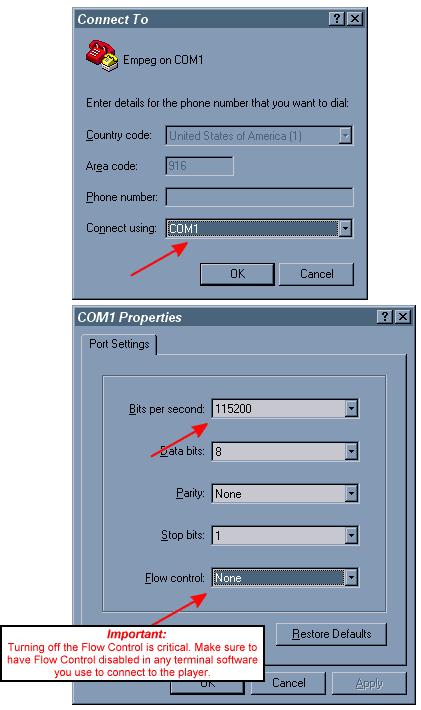

· How do I use Hyperterminal to connect to the player's shell prompt?
(Entry last updated on July 20th, 2006)
IMPORTANT: In Hijack versions 440 through 460, the serial port will not function as described below unless you modify a Hijack setting.
This only applies to players where you have installed the third-party Hijack kernel, version 440 through 460. If you have installed version 461 or later, this does not apply.
Do a long button press on the wheel to get the Hijack Menu. Select "Serial Port Assignment" -> "Player Uses Serial Port". Reboot immediately. Remember to change it back to "Apps use Serial Port" once you're done with Hyperterminal. This also requires a reboot.
The player's serial port is useful for many things, one of which is ASCII terminal communication with the player. Examples of things you can do are:
- Diagnosing and debugging problems.
- Remote controlling the player with ASCII commands.
- Accessing the Linux shell prompt to run programs or perform disk operations on the player.
Any piece of terminal software will work for this purpose, but Hyperterminal is most commonly used since it comes with Windows. If you can't find Hyperterminal on your Windows Start menu, search for the file "hypertrm.exe" on your hard disk, or search for "Hyperterminal" in the Windows Help. In some versions of Windows, it's an optional component and you may need the original Windows installation CD to install it. If you're not a Windows user, or you can't use Hyperterminal, you may use any other terminal program you like. There are many available for download on the internet, many of them freeware.
The first step is to make sure you've got a working COM (serial) port that you can use for the purpose. You can check the Windows Device Manager to make sure your serial ports are working and there are no conflicts. A genuine serial port is the best choice, as opposed to a USB-to-serial converter plug. Problems have been reported with some brands of USB-to-serial converters.
Depending on your system configuration, you may have a working COM port that shares an IRQ with another device. For instance, on my system, I once had a modem on COM3 and a serial port on COM1. These ports both used the same IRQ, so I couldn't dial the internet and communicate with the player at the same time (although I had no trouble doing those things independently of each other). I later reconfigured the system so that this was no longer a problem.
Also make sure that there aren't any other applications grabbing the COM port. If another program is using the COM port, it will prevent Hyperterminal from working. For instance, one common problem is people who leave their PalmSync program running when they try to run Hyperterminal. Or perhaps you just used Emplode or EmpegUpgrade and forgot to close it before running Hyperterminal.
The next thing you need is the proper cable, a 9-pin "null modem" cable. One was shipped along with the player, so you probably already have it, or they can be purchased at many computer stores or even Radio Shack. The most common problem with serial connections to the empeg is using a straight-through cable instead of a null modem cable. (There was a brief period where incorrect cables were being accidentally shipped to empeg customers, if you were affected, you may have received a replacement cable by now.) If your computer has a 25-pin serial port instead of a 9-pin port, you can get an adapter from most computer stores.
The cable must also be in good condition. I've had serial cables go bad from internal fraying. If this happens, it's hard to tell just by looking at it. The symptoms of a bad cable would be intermittent success at connecting.
Next, run the Hyperterminal program from the Windows Start menu.
Note: If you don't have a modem installed on your computer, Windows might complain, and give you an annoying box which asks you to install a modem. Just close this box without installing a modem, and continue with the rest of the procedure below. It may also force you to enter your dialing area code (Windows just doesn't know when to give up, does it?), just feed it something so it will shut up and let you get on with the direct COM port connection.
Now Hyperterminal will ask you to create a new connection. Name it something like "Empeg on COM1" (or whichever COM port you're using). The next two boxes will give you a chance to change parameters, change them as shown:

Note: The above settings assume you're connecting to the player when it's running on AC power. If you're trying to connect to the player via the in-car serial connector, you must change the "Bits Per Second" value to 4800. When it's running on DC power, the serial port speed is lowered to 4800 for better compatibility with other in-car hardware devices.
Alternatively, you can change this value on the player itself, allowing faster communication with Hyperterminal when sled-docked. The change is made by adding the following entry to the player's config.ini file:
[serial]
car_rate=115200
Also, according to Hugo, Mark 2 units with serial numbers below 1050 are be missing a ground wire on the in-car serial connector. To get them to work, you need to connect a ground wire between your laptop's serial cable shroud and a ground point on the vehicle.
Another thing to remember is that the serial port on the docking sled is already "crossed over" with the RX and TX pins swapped. So you need to use a straight-through serial cable instead of the supplied null-modem cable if you're connecting your PC to the docking sled's serial connector.
You have just created a Hyperterminal "profile", and you can now save the profile as an ".ht" file on the hard disk. Double-clicking on the .ht file will connect you directly to the player.
At this point, you can cycle the power on the player and you should see text begin to scroll down the screen. It should look something like this:
empeg-car v0.04 19990121 (altman@empeg.com)
If there is anyone present who wants to upgrade the flash, let them speak now, or forever hold their peace...it seems not. Let fly the Penguins of Linux!
Copying kernel...
Calling linux kernel...
Uncompressing Linux....................... done, booting the kernel.
(Etc...)
If your player is working properly, you can control it at this point by typing commands such as N (Enter) for the next track. A full list of commands can be found in the Developer Info section of this site.
Note: On some systems, Hyperterminal won't communicate with the player properly unless you reboot the player after starting Hyperterminal. If your keyboard commands don't seem to work, unplug the power from the player then plug it in again. Look to make sure you can see the bootup messages scrolling by as the player boots.
If you have installed the special developer version of the player software, pressing Q (Enter) will quit out of the player software and drop you to the Linux shell prompt to fool around. If Q (Enter) doesn't work, then try Ctrl-C or Ctrl-Break.
At this point, if you just have the consumer software installed, you'll get:
Switching to shell-player loop
Starting bash.
no shell!
Shell exit
... and the player will start playing where it left off.
So, if you want to do things at the shell prompt, the consumer software isn't enough. You need to install the developer software before you can get to the shell prompt. Instructions on how to obtain and install the developer software are here.
After you install the developer software, then when you press Q (Enter), you will see something like this:
empeg:/empeg/bin#_
With a blinking cursor. That's the shell prompt.
Warning: Don't fool around at the Linux shell prompt unless you know what you're doing. You could render the player inoperable if you alter certain files. Hopefully you're reading this because you already know what you want to do at the shell prompt (for instance, you've been directed here by other FAQ entries), or you are a Linux expert already and you know what to do. If you need a command reference, see the next FAQ entry for links to some Linux help documents.
Some things don't require shell access, and can be diagnosed simply by reading the text that's output by the player on bootup. If you have a large problem and the errors scroll past too quickly, you can increase the size of the Hyperterminal scrollback buffer by selecting File, Properties, Settings. After that, you will be able to scroll backwards through the text until you find what you're looking for.
You can also grab a complete boot log for diagnostic purposes. This is done by Selecting "Transfer, Capture Text" to begin creating the log file, then "Transfer, Capture Text, Stop" when you have captured the desired activity to that file.
Note: Some versions of Hypterterminal, specifically the one that comes with Windows XP, have a severely bug-ridden copy/paste function that scrambles the lines of text as they are copied to the clipboard. If you are trying to capture a boot log for diagnostic purposes, use the Capture Text feature instead.
The reverse is not true, however. If you have been given a list of diagnostic or repair commands to execute at the shell prompt, it is safe (and recommended) that you copy and paste the commands instead of trying to type them. The shell prompt is very sensitive to mistakes in spacing, spelling, and capitalization, and pasting the commands will produce the best results.
Examples of things you can look for in the text:
- Program errors, such as "Memory Violation" or "Kernel Panic".
- Huge memory dumps full of hexadecimal numbers.
- Disk errors, such as long pauses on "Probing Primary Interface", and/or no disk drives being detected at that stage. Note that a short pause and a couple of retries are normal during this stage as the drives spin up.
- Please note that there are certain text messages that will appear which are not errors, but might look like errors. For example, the message "Tried to mount /dev/hda4 as reiserfs but got error 19" is actually a normal status message.
Finally, if you own a Mark II player, you can initiate a diagnostic test cycle via Hyperterminal. This will test the unit's RAM chips. To do this, apply the power to the player and immediately press Ctrl-T in Hyperterminal. You should get an output similar to this:
empeg-car bootstrap v1.00 20000601 (hugo@empeg.com)
If there is anyone present who wants to upgrade the flash, let them speak now, or forever hold their peace...
0000 empeg-car board test version 0.04
0100 ram test starting
0110 testing ic 1 (0-3mb, low word)
0120 testing ic 2 (0-3mb, high word)
0130 testing ic 3 (4-7mb, low word)
0140 testing ic 4 (4-7mb, high word)
0150 testing ic 19 (8-11mb, low word)
0160 testing ic 32 (8-11mb, high word)
01f0 ram test done
0200 ide detect
0210 command issued
0220 drive id IBM-DARA-206000
02f0 ide ok
0300 dsp/i2c test
03f0 dsp/i2c ok
0400 temperature detect
0410 temperature is 27
04f0 temperature ok
0500 usb detect
0510 usb rev 1012
05f0 usb ok
0600 ethernet detect
0610 ethernet rev 334b
06f0 ethernet ok
0700 cs4231 detect
0710 cs4231 rev a0
07f0 cs4231 ok
00f0 tests complete
If you have a bad RAM chip, it should show up somewhere in the listing.
Note: According to Hugo, if you're having trouble getting the Ctrl-T to work, you can try holding down Ctrl-T in Hyperterminal and then apply the power to the player.
|